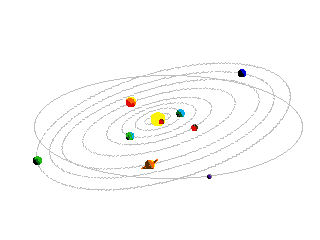

ABOUT
The rotational period and seasonal cycles of Mars are likewise similar to those of Earth, as is the tilt that produces the seasons. Mars is the site of Olympus Mons, the largest volcano and second-highest known mountain in the Solar System, and of Valles Marineris, one of the largest canyons in the Solar System. The smooth Borealis basin in the northern hemisphere covers 40% of the planet and may be a giant impact feature.[17][18] Mars has two moons, Phobos and Deimos, which are small and irregularly shaped. These may be captured asteroids,[19][20] similar to 5261 Eureka, a Mars trojan. There are ongoing investigations assessing the past habitability potential of Mars, as well as the possibility of extant life. Future astrobiology missions are planned, including the Mars 2020 and ExoMars rovers.[21][22][23][24] Liquid water cannot exist on the surface of Mars due to low atmospheric pressure, which is less than 1% of the Earth's,[25] except at the lowest elevations for short periods.[26][27] The two polar ice caps appear to be made largely of water.[28][29] The volume of water ice in the south polar ice cap, if melted, would be sufficient to cover the entire planetary surface to a depth of 11 meters (36 ft).[30] In November 2016, NASA reported finding a large amount of underground ice in the Utopia Planitia region of Mars. The volume of water detected has been estimated to be equivalent to the volume of water in Lake Superior.[31][32][33] Mars can easily be seen from Earth with the naked eye, as can its reddish coloring. Its apparent magnitude reaches −2.91,[8] which is surpassed only by Jupiter, Venus, the Moon, and the Sun. Optical ground-based telescopes are typically limited to resolving features about 300 kilometers (190 mi) across when Earth and Mars are closest because of Earth's atmosphere.[34]